EMTECH MEDIA · WORKING PREVIEW — NOT PART OF THE SITE
All sixteen figures, in one place
Each figure appears inside its tip's accordion on the live pages. Order below matches windows.html then mac.html.
Windows page — 8 figures
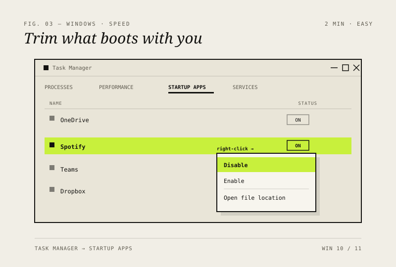
Disable startup bloatFIG. 03 · SPEED
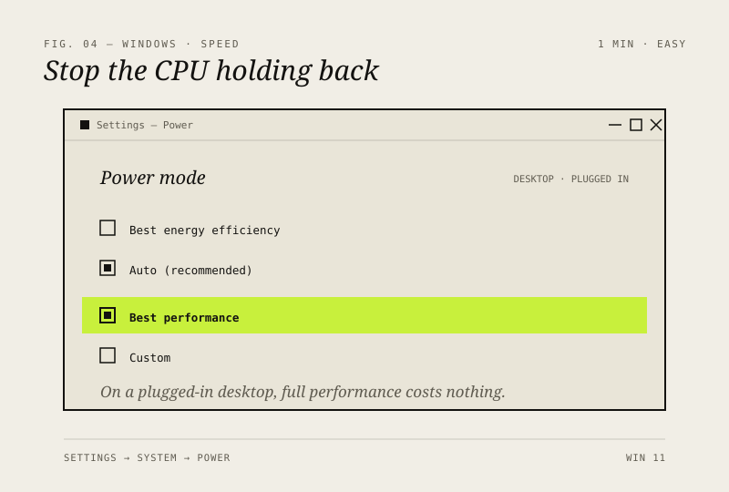
Switch the power plan to Best PerformanceFIG. 04 · SPEED
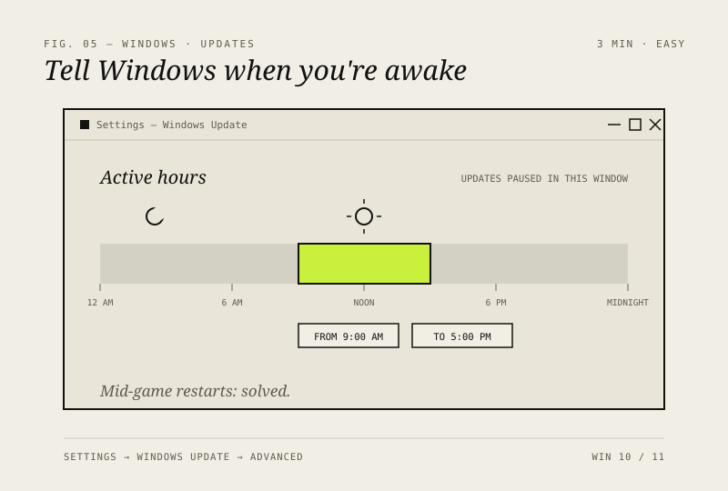
Stop Windows updates at odd hoursFIG. 05 · UPDATES
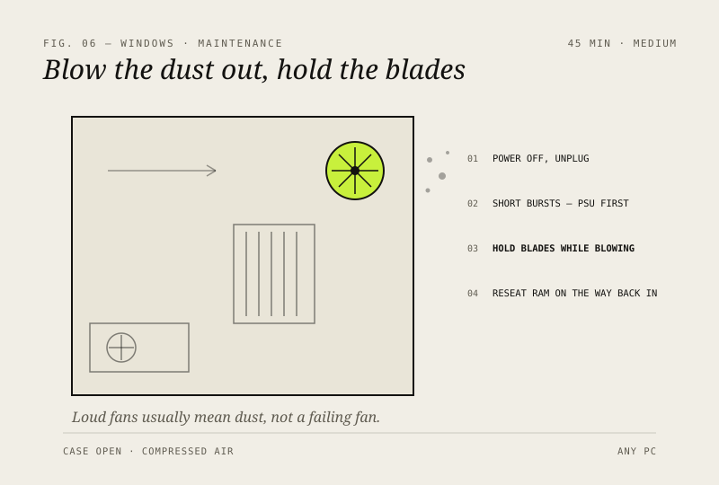
Fix a PC that overheats and fans like a jet engineFIG. 06 · MAINTENANCE
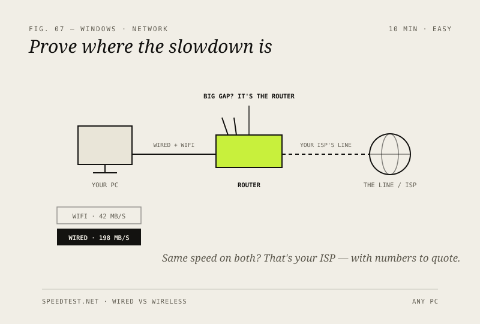
Slow internet? Run the five-minute testFIG. 07 · NETWORK
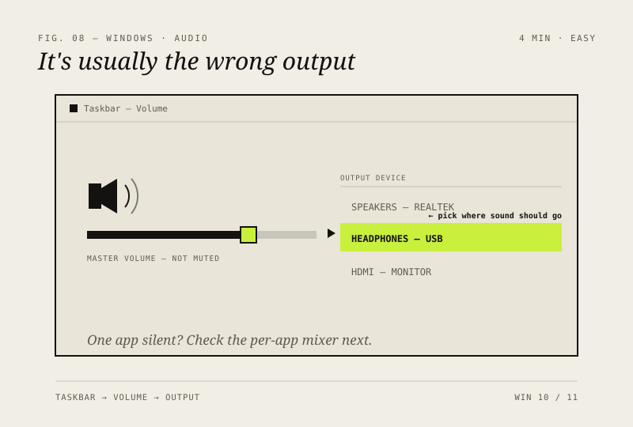
No sound? The four-minute fixFIG. 08 · AUDIO
Fix a blue screen (BSOD) without panickingFIG. 09 · CRASHES
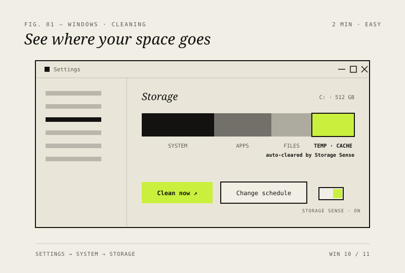
Let Windows' Storage Sense do the work for youFIG. 01 · CLEANING
Mac page — 8 figures
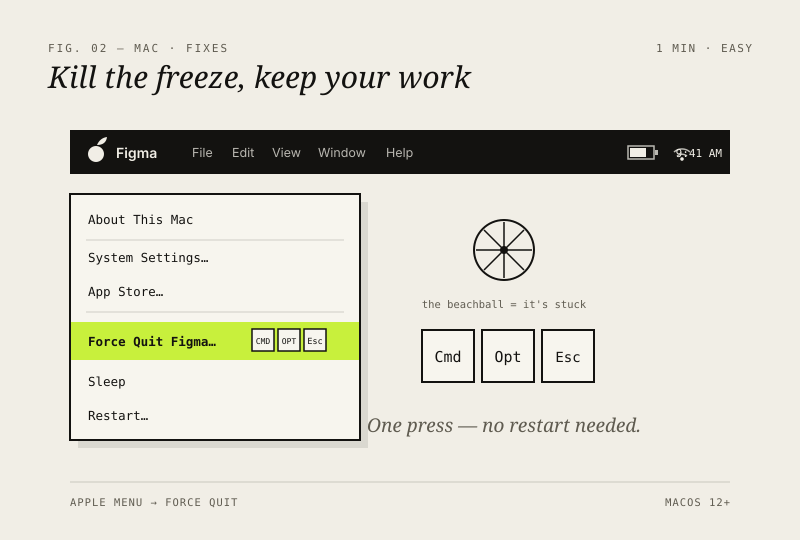
Force-quit a frozen appFIG. 02 · FIXES
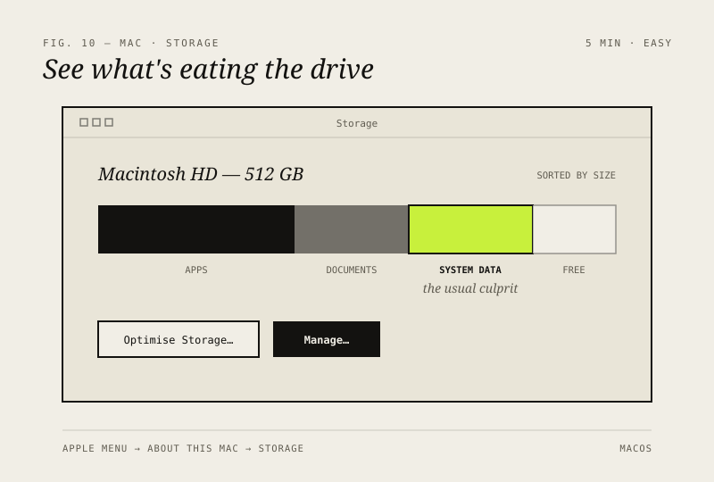
Free up disk space with Storage ManagementFIG. 10 · STORAGE
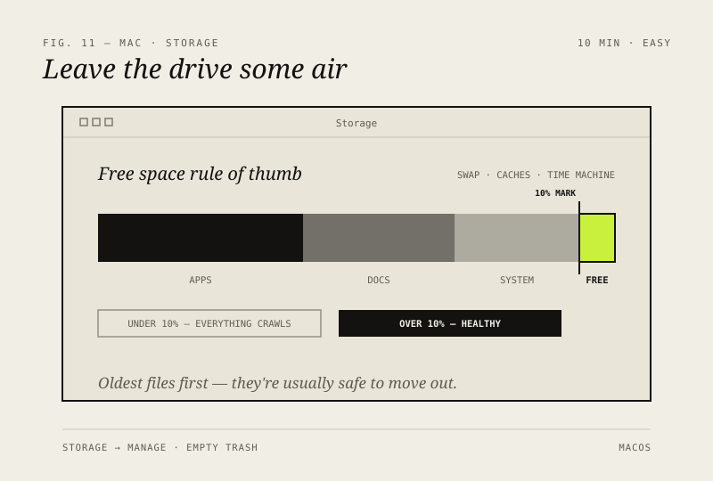
Keep 10% of your disk freeFIG. 11 · STORAGE
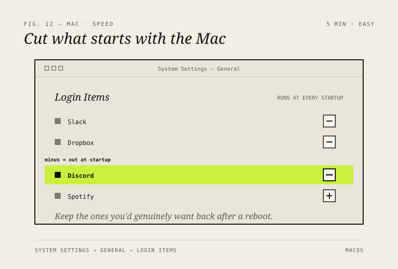
Stop apps from launching at loginFIG. 12 · SPEED
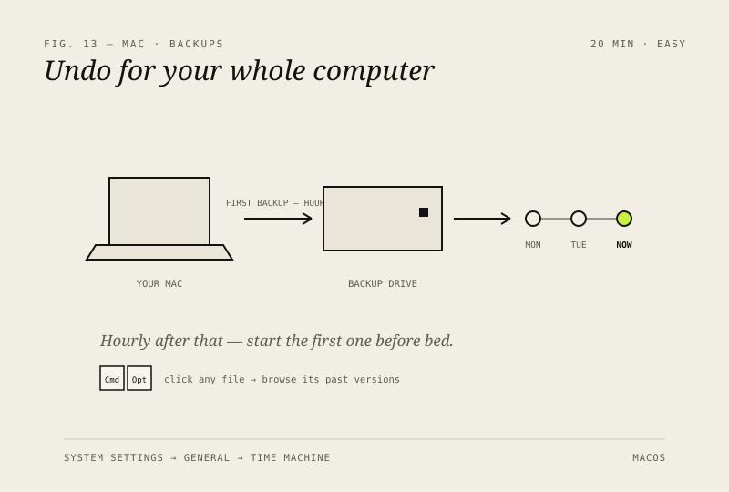
Set up Time Machine properlyFIG. 13 · BACKUPS
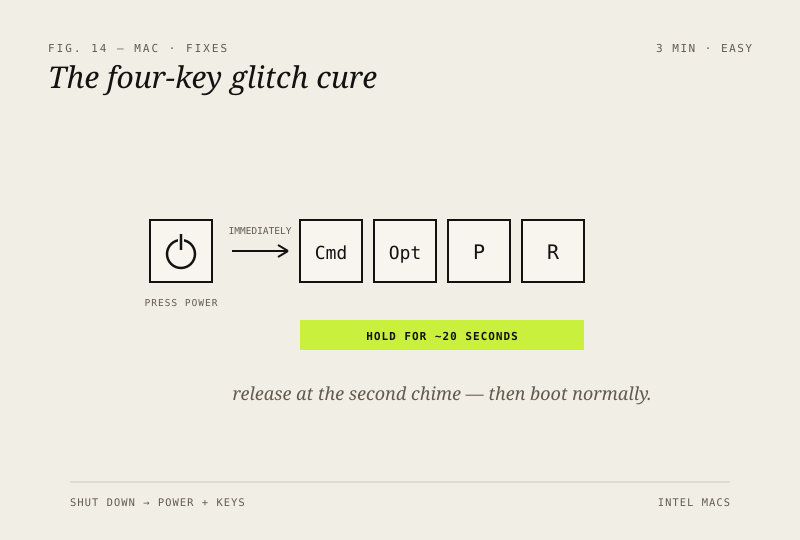
Reset NVRAM when things misbehaveFIG. 14 · FIXES
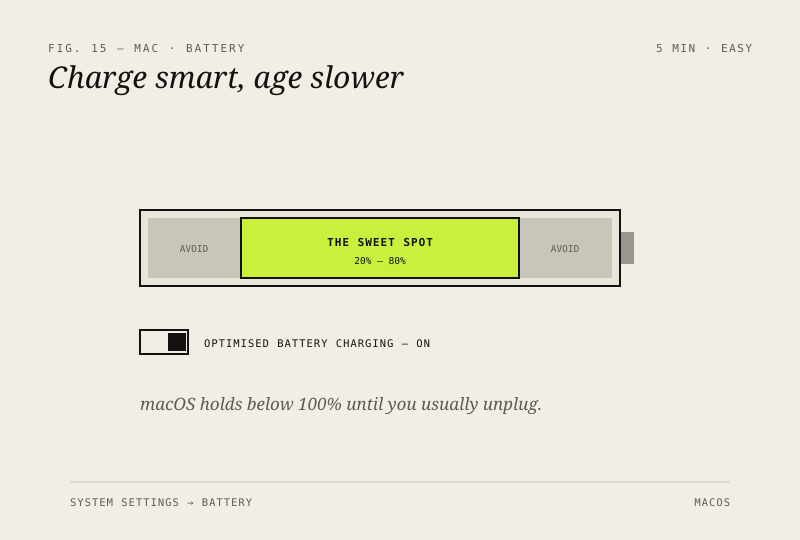
Keep your Mac battery healthyFIG. 15 · BATTERY
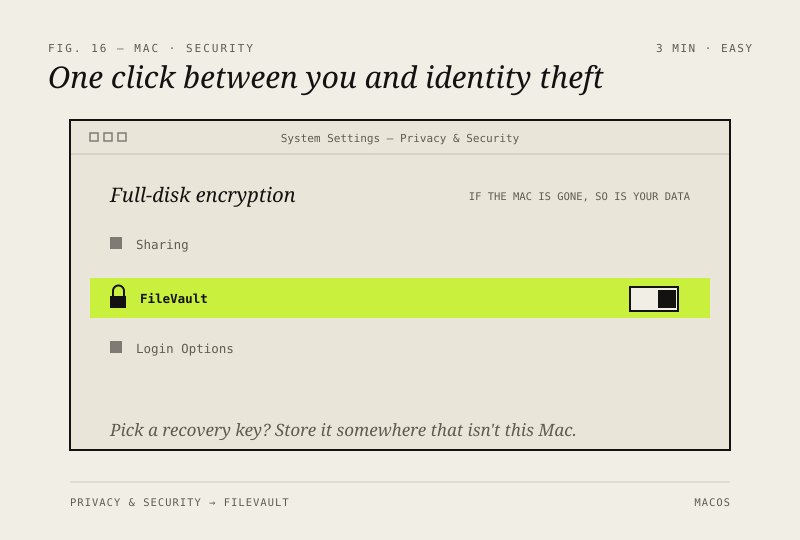
Turn on FileVault full-disk encryptionFIG. 16 · SECURITY